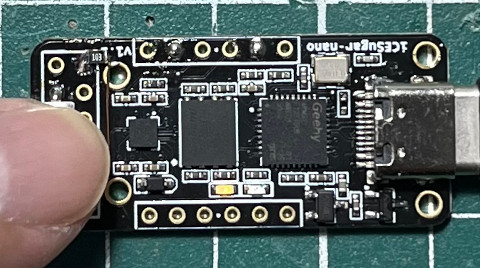

main.v
library ieee;
use ieee.std_logic_1164.all;
entity main is
port(
btn : in bit;
led : out bit
);
end main;
architecture logic of main is
begin
led <= not btn;
end logic;
main.pcf
set_io led B6 set_io btn E3
完成
